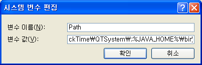

JDBC 드라이버
JDBC 개요
CUBRID JDBC 드라이버(cubrid_jdbc.jar)를 사용하면 Java로 작성된 응용 프로그램에서 CUBRID 데이터베이스에 접속할 수 있다. CUBRID JDBC 드라이버는 <CUBRID 설치 디렉터리> /jdbc 디렉터리에 위치한다. CUBRID JDBC 드라이버는 JDBC 2.0 스펙을 기준으로 개발되었으며, JDK 1.6에서 컴파일한 것을 기본으로 제공한다.
CUBRID JDBC 드라이버 버전 확인
JDBC 드라이버 버전은 다음과 같은 방법으로 확인할 수 있다.
% jar -tf cubrid_jdbc.jar
META-INF/
META-INF/MANIFEST.MF
cubrid/
cubrid/jdbc/
cubrid/jdbc/driver/
cubrid/jdbc/jci/
cubrid/sql/
cubrid/jdbc/driver/CUBRIDBlob.class
...
CUBRID-JDBC-11.0.0.0248
CUBRID JDBC 드라이버 등록
JDBC 드라이버 등록은 Class.forName (driver-class-name) 메서드를 사용하며, 아래는 CUBRID JDBC 드라이버를 등록하기 위해 cubrid.jdbc.driver.CUBRIDDriver 클래스를 로드하는 예제이다.
import java.sql.*;
import cubrid.jdbc.driver.*;
public class LoadDriver {
public static void main(String[] Args) {
try {
Class.forName("cubrid.jdbc.driver.CUBRIDDriver");
} catch (Exception e) {
System.err.println("Unable to load driver.");
e.printStackTrace();
}
...
JDBC 설치 및 설정
기본 환경
JDK 1.6 이상
CUBRID 2008 R2.0(8.2.0) 이상
CUBRID JDBC 드라이버 2008 R1.0 이상
Java 설치 및 환경 변수 설정
시스템에 Java가 설치되어 있고 JAVA_HOME 환경 변수가 등록되어 있어야 한다. Java는 Developer Resources for Java Technology 사이트( https://www.oracle.com/java/technologies/ )에서 다운로드할 수 있다.
Windows 환경에서 환경 변수 설정
Java 설치 후 [내 컴퓨터]를 마우스 오른쪽 버튼 클릭하여 [속성]을 선택하면 [시스템 등록 정보] 대화 상자가 나타난다. [고급] 탭의 [환경 변수]를 클릭하면 나타나는 [환경 변수] 대화 상자가 나타난다.
[시스템 변수]에서 [새로 만들기]를 선택한다. [변수 이름]에 JAVA_HOME 을 입력하고, 변수 값으로 Java 설치 경로(예: C:Program FilesJavajdk1.6.0_16)를 입력한 후 [확인]을 클릭한다.

[시스템 변수] 중 Path를 선택하고 [편집]을 클릭한다. [변수 값]에 %JAVA_HOME%\bin 를 추가하고 [확인]을 클릭한다.

위의 방법을 사용하지 않고 다음과 같이 셸에서 JAVA_HOME 과 PATH 환경 변수를 설정할 수도 있다.
set JAVA_HOME= C:\Program Files\Java\jdk1.6.0_16
set PATH=%PATH%;%JAVA_HOME%\bin
Linux 환경에서 환경 변수 설정
다음과 같이 Java가 설치된 JAVA_HOME 환경 변수로 디렉터리 경로(예: /usr/java/jdk1.6.0_16)를 설정하고, PATH 환경 변수에 $JAVA_HOME/bin 을 추가한다.
export JAVA_HOME=/usr/java/jdk1.6.0_16 #bash
export PATH=$JAVA_HOME/bin:$PATH #bash
setenv JAVA_HOME /usr/java/jdk1.6.0_16 #csh
set path = ($JAVA_HOME/bin $path) #csh
JDBC 드라이버 설정
JDBC를 사용하려면 CUBRID JDBC 드라이버가 존재하는 경로를 환경 변수 CLASSPATH 에 추가해야 한다.
CUBRID JDBC 드라이버(cubrid_jdbc.jar)는 CUBRID 설치 디렉터리 아래의 jdbc 디렉터리에 위치한다.

Windows 환경에서 CLASSPATH 환경 변수 설정
set CLASSPATH=C:\CUBRID\jdbc\cubrid_jdbc.jar:.
Linux 환경에서 CLASSPATH 환경 변수 설정
export CLASSPATH=$HOME/CUBRID/jdbc/cubrid_jdbc.jar:.
경고
만약 JRE가 설치된 라이브러리 디렉터리($JAVA_HOME/jre/lib/ext)에 일반 CUBRID JDBC 드라이버가 설치되어 있다면, Java 저장 프로시저에서 사용하는 서버 사이드 JDBC 드라이버보다 먼저 로드되어 Java 저장 프로시저가 비정상적으로 구동될 수 있다. Java 저장 프로시저를 사용하는 환경에서는 JRE가 설치된 라이브러리 디렉터리( $JAVA_HOME/jre/lib/ext)에 일반 CUBRID JDBC 드라이버를 설치하지 않도록 주의한다.
JDBC 프로그래밍
연결 설정
DriverManager 는 JDBC 드라이버를 관리하기 위한 기본적인 인터페이스이며, 데이터베이스 드라이버를 선택하고 새로운 데이터베이스 연결을 생성하는 기능을 한다. CUBRID JDBC 드라이버가 등록되어 있다면 DriverManager.getConnection (db-url, user-id, password) 메서드를 호출하여 데이터베이스에 접속한다.
getConnection 메서드는 Connection 객체를 반환한다. 그리고 그것은 질의 실행과 명령문 실행 그리고 트랜잭션의 커밋 또는 롤백에 사용된다. 연결 설정을 위한 db-url 인자의 구성은 다음과 같다.
jdbc:cubrid:<host>:<port>:<db-name>:[user-id]:[password]:[?<property> [& <property>] ... ]
<host> ::=
hostname | ip_address
<property> ::= altHosts=<alternative_hosts>
| rcTime=<second>
| loadBalance=<bool_type>
| connectTimeout=<second>
| queryTimeout=<second>
| charSet=<character_set>
| zeroDateTimeBehavior=<behavior_type>
| logFile=<file_name>
| logOnException=<bool_type>
| logSlowQueries=<bool_type>&slowQueryThresholdMillis=<millisecond>
| useLazyConnection=<bool_type>
| useSSL=<bool_type>
| clientCacheSize=<unit_size>
<alternative_hosts> ::=
<standby_broker1_host>:<port> [,<standby_broker2_host>:<port>]
<behavior_type> ::= exception | round | convertToNull
<bool_type> ::= true | false
<unit_size> ::= multiple of mega byte
host: CUBRID 브로커가 동작하고 있는 서버의 IP 주소 또는 호스트 이름
port: CUBRID 브로커의 포트 번호(기본값: 33000)
db-name: 접속할 데이터베이스 이름
user-id: 데이터베이스에 접속할 사용자 ID이다. 기본적으로 데이터베이스에는 dba 와 public 두 개의 사용자가 존재한다. 이 값이 NULL이면 db-url의 사용자 ID가 사용되며, 빈 문자열(“”)이면 public이 사용자 ID로 사용된다.
password: 데이터베이스에 접속할 사용자의 암호이다. 이 값이 NULL이면 url의 암호가 사용되며, 빈 문자열(“”)이면 빈 문자열이 암호로 사용된다. db-url 내의 암호에는 ‘:’를 포함할 수 없다.
<property>
altHosts: HA 환경에서 장애 시 fail-over할 하나 이상의 standby 브로커의 호스트 IP와 접속 포트이다.
참고
메인 호스트와 altHosts 브로커들의 ACCESS_MODE설정에 RW와 RO가 섞여 있다 하더라도, 응용 프로그램은 ACCESS_MODE와 무관하게 접속 대상 호스트를 결정한다. 따라서 사용자는 접속 대상 브로커의 ACCESS_MODE를 감안해서 메인 호스트와 altHosts를 정해야 한다.
rcTime: 첫 번째로 접속했던 브로커에 장애가 발생한 이후 altHosts 에 명시한 브로커로 접속한다(failover). 이후, rcTime만큼 시간이 경과할 때마다 원래의 브로커에 재접속을 시도한다(기본값 600초). 입력 방법은 아래 URL 예제를 참고한다.
loadBalance: 이 값이 true면 응용 프로그램이 메인 호스트와 altHosts에 지정한 호스트들에 랜덤한 순서로 연결한다(기본값: false).
connectTimeout: 데이터베이스 접속에 대한 타임아웃 시간을 초 단위로 설정한다. 기본값은 30초이다. 이 값이 0인 경우 무한 대기를 의미한다. 이 값은 최초 접속 이후 내부적인 재접속이 발생하는 경우에도 적용된다. DriverManger.setLoginTimeout () 메서드로 설정할 수도 있으나, 연결 URL에 이 값을 설정하면 메서드로 설정한 값은 무시된다.
queryTimeout: 질의 수행에 대한 타임아웃 시간을 초 단위로 설정한다(기본값: 0, 무제한). 최대값은 2,000,000이다. 이 값은 DriverManger.setQueryTimeout () 메서드에 의해 변경될 수 있다. executeBatch() 메서드를 수행하는 경우 한 개의 질의에 대한 타임아웃이 아닌 한 번의 메서드 호출에 대한 타임아웃이 적용된다.
참고
executeBatch() 메서드를 수행하는 경우 한 개의 질의에 대한 타임아웃이 아닌 한 번의 메서드 호출에 대한 타임아웃이 적용된다.
charSet: 접속하고자 하는 DB의 문자셋(charSet)이다.
zeroDateTimeBehavior: JDBC에서는 java.sql.Date 형 객체에 날짜와 시간 값이 모두 0인 값을 허용하지 않으므로 이 값을 출력해야 할 때 어떻게 처리할 것인지를 정하는 속성. 기본 동작은 exception 이다. 날짜와 시간 값이 모두 0인 값에 대한 설명은 날짜/시간 데이터 타입 을 참고한다.
설정값에 따른 동작은 다음과 같다.
exception: 기본 동작. SQLException 예외로 처리한다.
round: 반환할 타입의 최소값으로 변환한다. 단, TIMESTAMP 타입은 ‘1970-01-01 00:00:00’(GST)를 반환한다.
convertToNull: NULL 로 변환한다.
logFile: 디버깅용 로그 파일 이름(기본값: cubrid_jdbc.log). 별도의 경로 설정이 없으면 응용 프로그램을 실행하는 위치에 저장된다.
logOnException: 디버깅용 예외 처리 로깅 여부(기본값: false)
logSlowQueries: 디버깅용 슬로우 쿼리 로깅 여부(기본값: false)
slowQueryThresholdMillis: 디버깅용 슬로우 쿼리 로깅 시 슬로우 쿼리 제한 시간(기본값: 60000). 단위는 밀리 초이다.
useLazyConnection: 이 값이 true이면 사용자의 연결 요청 시 브로커 연결 없이 성공을 반환(기본값: false)하고, prepare나 execute 등의 함수를 호출할 때 브로커에 연결한다. 이 값을 true로 설정하면 많은 응용 클라이언트가 동시에 재시작되면서 연결 풀(connection pool)을 생성할 때 접속이 지연되거나 실패하는 현상을 피할 수 있다.
useSSL: 패킷 암호화 여부 (기본값: false)
패킷 암호화: useSSL = true
일반 평문: useSSL = false
clientCacheSize: 결과를 캐시할 크기 * 단위는 메가 바이트 * 범위는 1 ~ 1024 (1메가 바이트에서 to 1기가 바이트) * 기본 값은 1 (메가 바이트)
예제 1
--connection URL string when user name and password omitted
URL=jdbc:CUBRID:192.168.0.1:33000:demodb:public::
--connection URL string when zeroDateTimeBehavior property specified
URL=jdbc:CUBRID:127.0.0.1:33000:demodb:public::?zeroDateTimeBehavior=convertToNull
--connection URL string when charSet property specified
URL=jdbc:CUBRID:192.168.0.1:33000:demodb:public::?charSet=utf-8
--connection URL string when queryTimeout and charSet property specified
URL=jdbc:CUBRID:127.0.0.1:33000:demodb:public::?queryTimeout=1&charSet=utf-8
--connection URL string when a property(altHosts) specified for HA
URL=jdbc:CUBRID:192.168.0.1:33000:demodb:public::?altHosts=192.168.0.2:33000,192.168.0.3:33000
--connection URL string when properties(altHosts,rcTime, connectTimeout) specified for HA
URL=jdbc:CUBRID:192.168.0.1:33000:demodb:public::?altHosts=192.168.0.2:33000,192.168.0.3:33000&rcTime=600&connectTimeout=5
--connection URL string when properties(altHosts,rcTime, charSet) specified for HA
URL=jdbc:CUBRID:192.168.0.1:33000:demodb:public::?altHosts=192.168.0.2:33000,192.168.0.3:33000&rcTime=600&charSet=utf-8
--connection URL string when useSSL property specified for encrypted connection
URL=jdbc:CUBRID:192.168.0.1:33000:demodb:public::?useSSL=true
--connection URL string when clientCacheSize property specified for result-cache
URL=jdbc:CUBRID:192.168.0.1:33000:demodb:public::?clientCacheSize=1
예제 2
String url = "jdbc:cubrid:192.168.0.1:33000:demodb:public::";
String userid = "";
String password = "";
try {
Connection conn =
DriverManager.getConnection(url,userid,password);
// Do something with the Connection
...
} catch (SQLException e) {
System.out.println("SQLException:" + e.getMessage());
System.out.println("SQLState: " + e.getSQLState());
}
...
참고
URL 문자열에서 콜론(:)과 물음표(?)는 구분자로 사용되므로, URL 문자열에 암호를 포함하는 경우 암호의 일부에 콜론이나 물음표를 사용할 수 없다. 암호에 콜론이나 물음표를 사용하려면 getConnection 함수에서 사용자 이름(user-id)과 암호(password)를 별도의 인자로 지정해야 한다.
스레드 기반 프로그램에서 데이터베이스 연결은 각 스레드마다 독립적으로 사용해야 한다.
트랜잭션 롤백을 요청하는 rollback 메서드는 서버가 롤백 작업을 완료한 후 종료된다.
자동 커밋 모드에서 SELECT 문 수행 이후 모든 결과 셋이 fetch되지 않으면 커밋이 되지 않는다. 따라서, 자동 커밋 모드라 하더라도 프로그램 내에서 결과 셋에 대한 fetch 도중 어떠한 오류가 발생한다면 반드시 커밋 또는 롤백을 수행하여 트랜잭션을 종료 처리하도록 한다.
경고
useSSL의 flag는 브로커 모드와 일치해야 한다. 아래와 같이 브로커의 암호화 모드와 다른 flag로 접속을 요청하는 경우 연결되지 않는다.
useSSL=true, 브로커 ‘일반 모드’ 일 때 연결 불가 (cubrid_broker.conf: SSL = OFF)
useSSL=false, 브로커 ‘암호화 모드’ 일때 연결 불가 (cubrid_broker.conf: SSL = ON)
clientCacheSize 는 브로커 파라미터인 JDBC_CACHE 혹은 JDBC_CACHE_ONLY_HINT 가 ON 으로 설정되어 있어야 유효하다.
DataSource 객체로 연결
DataSource는 JDBC 2.0 확장 API에 소개된 개념으로, 연결 풀링(connection pooling)과 분산 트랜잭션을 지원한다. CUBRID는 연결 풀링만 지원하며, 분산 트랜잭션과 JNDI는 지원하지 않는다.
CUBRIDDataSource는 CUBRID에서 구현한 DataSource이다.
DataSource 객체 생성하기
DataSource 객체를 생성하려면 다음과 같이 호출한다.
CUBRIDDataSource ds = null;
ds = new CUBRIDDataSource();
연결 속성 설정하기
연결 속성(connection properties)은 datasource와 CUBRID DBMS 사이에 연결을 설정하는데 사용된다. 일반적인 속성은 DB 이름, 호스트 이름, 포트 번호, 사용자 이름, 암호이다.
속성(property) 값을 설정하거나 얻기 위해서는 cubrid.jdbc.driver.CUBRIDDataSource에서 구현된 다음 메서드들을 사용한다.
public PrintWriter getLogWriter();
public void setLogWriter(PrintWriter out);
public void setLoginTimeout(int seconds);
public int getLoginTimeout();
public String getDatabaseName();
public String getDatabaseName();
public String getDataSourceName();
public String getDescription();
public String getNetworkProtocol();
public String getPassword();
public int getPortNumber();
public int getPort();
public String getRoleName();
public String getServerName();
public String getUser();
public String getURL();
public String getUrl();
public void setDatabaseName(String dbName);
public void setDescription(String desc);
public void setNetworkProtocol(String netProtocol);
public void setPassword(String psswd);
public void setPortNumber(int p);
public void setPort(int p);
public void setRoleName(String rName);
public void setServerName(String svName);
public void setUser(String uName);
public void setUrl(String urlString);
public void setURL(String urlString);
특히, URL 문자열을 통해 속성을 지정하고자 하는 경우 setURL() 메서드를 사용한다. URL 문자열에 대해서는 연결 설정을 참고한다.
import cubrid.jdbc.driver.CUBRIDDataSource;
...
CUBRIDDataSource ds = null;
ds = new CUBRIDDataSource();
ds.setUrl("jdbc:cubrid:10.113.153.144:55300:demodb:::?charset=utf8&logSlowQueries=true&slowQueryThresholdMillis=1000&logTraceApi=true&logTraceNetwork=true");
DataSource로부터 연결 객체를 얻기 위해서는 getConnection 메서드를 호출한다.
Connection connection = null;
connection = ds.getConnection("dba", "");
CUBRIDConnectionPoolDataSource는 connectionpool datasource를 CUBRID에서 구현한 객체인데, CUBRIDDataSource의 메서드들과 같은 이름의 메서드들을 포함하고 있다.
보다 자세한 예제는 JDBC 예제 프로그램의 DataSource 객체로 연결을 참고한다.
SQL LOG 확인
cubrid.jdbc.driver.CUBRIDConnection 클래스의 toString() 메서드를 사용하여 다음과 같은 연결 정보를 출력할 수 있다.
예) cubrid.jdbc.driver.CUBRIDConnection(CAS ID : 1, PROCESS ID : 22922)
위에서 출력되는 CAS ID를 통해 해당 CAS의 SQL 로그 파일을 쉽게 확인할 수 있다.
보다 자세한 사항은 SQL 로그 확인을 참고한다.
외래 키 정보 확인
DatabaseMetaData 인터페이스에서 제공되는 getImportedKeys, getExportedKeys, getCrossReference 메서드를 사용하여 외래 키 정보를 확인할 수 있다. 각 메서드의 사용법 및 예제는 다음과 같다.
getImportedKeys(String catalog, String schema, String table)
getExportedKeys(String catalog, String schema, String table)
getCrossReference(String parentCatalog, String parentSchema, String parentTable, String foreignCatalog, String foreignSchema, String foreignTable)
getImportedKeys 메서드: 인자로 주어진 테이블의 외래 키 칼럼들이 참조하고 있는 기본 키 칼럼들의 정보를 조회한다. 결과는 PKTABLE_NAME 및 KEY_SEQ 순서로 정렬되어 반환된다.
getExportedKeys 메서드: 주어진 테이블의 기본 키 칼럼들을 참조하는 모든 외래 키 칼럼들의 정보를 조회하며, 결과는 FKTABLE_NAME 및 KEY_SEQ 순서로 정렬된다.
getCrossReference 메서드: 인자로 주어진 테이블의 외래 키 칼럼들이 참조하고 있는 기본 키 칼럼들의 정보를 조회한다. 결과는 PKTABLE_NAME 및 KEY_SEQ 순서로 정렬되어 반환된다.
반환 값
위 메서드를 호출하면 아래와 같이 14개의 칼럼으로 구성된 ResultSet을 반환한다.
name |
type |
비고 |
|---|---|---|
PKTABLE_CAT |
String |
항상 null |
PKTABLE_SCHEM |
String |
항상 null |
PKTABLE_NAME |
String |
기본 키 테이블 이름 |
PKCOLUMN_NAME |
String |
기본 키 칼럼 이름 |
FKTABLE_CAT |
String |
항상 null |
FKTABLE_SCHEM |
String |
항상 null |
FKTABLE_NAME |
String |
외래 키 테이블 이름 |
FKCOLUMN_NAME |
String |
외래 키 칼럼 이름 |
KEY_SEQ |
short |
외래 키 또는 기본 키 칼럼들의 순서(1부터 시작) |
UPDATE_RULE |
short |
기본 키가 업데이트될 때 외래 키에 대해 정의된 참조 동작에 대응되는 값 Cascade=0, Restrict=2, No action=3, Set null=4 |
DELETE_RULE |
short |
기본 키가 삭제될 때 외래 키에 대해 정의된 참조 동작에 대응되는 값 Cascade=0, Restrict=2, No action=3, Set null=4 |
FK_NAME |
String |
외래 키 이름 |
PK_NAME |
String |
기본 키 이름 |
DEFERRABILITY |
short |
항상 6 (DatabaseMetaData.importedKeyInitiallyImmediate) |
예제
ResultSet rs = null;
DatabaseMetaData dbmd = conn.getMetaData();
System.out.println("\n===== Test getImportedKeys");
System.out.println("=====");
rs = dbmd.getImportedKeys(null, null, "pk_table");
Test.printFkInfo(rs);
rs.close();
System.out.println("\n===== Test getExportedKeys");
System.out.println("=====");
rs = dbmd.getExportedKeys(null, null, "fk_table");
Test.printFkInfo(rs);
rs.close();
System.out.println("\n===== Test getCrossReference");
System.out.println("=====");
rs = dbmd.getCrossReference(null, null, "pk_table", null, null, "fk_table");
Test.printFkInfo(rs);
rs.close();
OID와 컬렉션 사용
JDBC 스펙에 정의된 메서드 이외에 CUBRID JDBC 드라이버에서 추가로 OID, 컬렉션 타입(SET, MULTISET, LIST) 등을 다루는 메서드를 제공한다.
이 메서드의 사용을 위해서는 기본적으로 import하는 CUBRID JDBC 드라이버 클래스 이외에 cubrid.sql.*; 를 import해야 한다. 또한 표준 JDBC API에서 제공하는 ResultSet 클래스가 아닌 CUBRIDResultSet 클래스로 변환하여 결과를 받아야 한다.
import cubrid.jdbc.driver.* ;
import cubrid.sql.* ;
...
CUBRIDResultSet urs = (CUBRIDResultSet) stmt.executeQuery(
"SELECT city FROM location");
경고
CUBRID의 확장 API를 사용하면, AUTOCOMMIT 을 TRUE로 설정하였더라도 자동으로 커밋되지 않는다. 따라서 항상 open한 연결에 대해 명시적으로 커밋을 해야 한다. CUBRID 확장 API는 OID, 컬렉션 등을 다루는 메서드이다.
OID 사용
OID를 사용할 때 다음의 규칙을 지켜야 한다.
CUBRIDOID 를 사용하기 위해서는 반드시 cubrid.sql. * 를 import 해야 한다. (a)
SELECT 문에 클래스명을 주어 OID를 가져올 수 있다. 물론 다른 속성과 혼용해서 사용할 수도 있다. (b)
질의에 대한 ResultSet 은 반드시 CUBRIDResultSet 으로 받아야 한다. (c)
CUBRIDResultSet 에서 OID를 가져오는 메서드는 getOID ()이다. (d)
OID에서 값을 가져오기 위해서는 getValues () 메서드를 통해 가져올 수 있다. 그 결과는 ResultSet 이다. (e)
OID에 값을 대입하기 위해서는 setValues () 메서드를 통해서 적용할 수 있다. (f)
확장 API 사용시에는 연결에 대해 항상 commit ()을 해주어야 한다. (g)
예제
import java.sql.*;
import cubrid.sql.*; //a
import cubrid.jdbc.driver.*;
/*
CREATE TABLE oid_test(
id INTEGER,
name VARCHAR(10),
age INTEGER
);
INSERT INTO oid_test VALUES(1, 'Laura', 32);
INSERT INTO oid_test VALUES(2, 'Daniel', 39);
INSERT INTO oid_test VALUES(3, 'Stephen', 38);
*/
class OID_Sample
{
public static void main (String args [])
{
// Making a connection
String url= "jdbc:cubrid:localhost:33000:demodb:public::";
String user = "dba";
String passwd = "";
// SQL statement to get OID values
String sql = "SELECT oid_test from oid_test"; //b
// columns of the table
String[] attr = { "id", "name", "age" } ;
// Declaring variables for Connection and Statement
Connection con = null;
Statement stmt = null;
CUBRIDResultSet rs = null;
ResultSetMetaData rsmd = null;
try {
Class.forName("cubrid.jdbc.driver.CUBRIDDriver");
} catch (ClassNotFoundException e) {
throw new IllegalStateException("Unable to load Cubrid driver", e);
}
try {
con = DriverManager.getConnection(url, user, passwd);
stmt = con.createStatement();
rs = (CUBRIDResultSet)stmt.executeQuery(sql); //c
rsmd = rs.getMetaData();
// Printing columns
int numOfColumn = rsmd.getColumnCount();
for (int i = 1; i <= numOfColumn; i++ ) {
String ColumnName = rsmd.getColumnName(i);
String JdbcType = rsmd.getColumnTypeName(i);
System.out.print(ColumnName );
System.out.print("("+ JdbcType + ")");
System.out.print(" | ");
}
System.out.print("\n");
// Printing rows
CUBRIDResultSet rsoid = null;
int k = 1;
while (rs.next()) {
CUBRIDOID oid = rs.getOID(1); //d
System.out.print("OID");
System.out.print(" | ");
rsoid = (CUBRIDResultSet)oid.getValues(attr); //e
while (rsoid.next()) {
for( int j=1; j <= attr.length; j++ ) {
System.out.print(rsoid.getObject(j));
System.out.print(" | ");
}
}
System.out.print("\n");
// New values of the first row
Object[] value = { 4, "Yu-ri", 19 };
if (k == 1) oid.setValues(attr, value); //f
k = 0;
}
con.commit(); //g
} catch(CUBRIDException e) {
e.printStackTrace();
} catch(SQLException ex) {
ex.printStackTrace();
} finally {
if(rs != null) try { rs.close(); } catch(SQLException e) {}
if(stmt != null) try { stmt.close(); } catch(SQLException e) {}
if(con != null) try { con.close(); } catch(SQLException e) {}
}
}
}
컬렉션 사용
아래 예제 1의 ‘a’에 해당하는 부분이 CUBRIDResultSet 으로부터 컬렉션 타입(SET, MULTISET, LIST)의 데이터를 가져오는 부분으로 그 결과는 배열 형태로 반환한다. 단, 컬렉션 타입 내에 정의된 원소들의 데이터 타입이 모두 같은 경우에만 사용할 수 있다.
예제 1
import java.sql.*;
import java.lang.*;
import cubrid.sql.*;
import cubrid.jdbc.driver.*;
// create class collection_test(
// settest set(integer),
// multisettest multiset(integer),
// listtest list(Integer)
// );
//
// insert into collection_test values({1,2,3},{1,2,3},{1,2,3});
// insert into collection_test values({2,3,4},{2,3,4},{2,3,4});
// insert into collection_test values({3,4,5},{3,4,5},{3,4,5});
class Collection_Sample
{
public static void main (String args [])
{
String url= "jdbc:cubrid:127.0.0.1:33000:demodb:public::";
String user = "";
String passwd = "";
String sql = "select settest,multisettest,listtest from collection_test";
try {
Class.forName("cubrid.jdbc.driver.CUBRIDDriver");
} catch(Exception e){
e.printStackTrace();
}
try {
Connection con = DriverManager.getConnection(url,user,passwd);
Statement stmt = con.createStatement();
CUBRIDResultSet rs = (CUBRIDResultSet) stmt.executeQuery(sql);
CUBRIDResultSetMetaData rsmd = (CUBRIDResultSetMetaData) rs.getMetaData();
int numbOfColumn = rsmd.getColumnCount();
while (rs.next ()) {
for (int j=1; j<=numbOfColumn; j++ ) {
Object[] reset = (Object[]) rs.getCollection(j); //a
for (int m=0 ; m < reset.length ; m++)
System.out.print(reset[m] +",");
System.out.print(" | ");
}
System.out.print("\n");
}
rs.close();
stmt.close();
con.close();
} catch(SQLException e) {
e.printStackTrace();
}
}
}
예제 2
import java.sql.*;
import java.io.*;
import java.lang.*;
import cubrid.sql.*;
import cubrid.jdbc.driver.*;
// create class collection_test(
// settest set(integer),
// multisettest multiset(integer),
// listtest list(Integer)
// );
//
// insert into collection_test values({1,2,3},{1,2,3},{1,2,3});
// insert into collection_test values({2,3,4},{2,3,4},{2,3,4});
// insert into collection_test values({3,4,5},{3,4,5},{3,4,5});
class SetOP_Sample {
public static void main(String args[]) {
String url = "jdbc:cubrid:127.0.0.1:33000:demodb:public::";
String user = "";
String passwd = "";
String sql = "select collection_test from collection_test";
try {
Class.forName("cubrid.jdbc.driver.CUBRIDDriver");
} catch (Exception e) {
e.printStackTrace();
}
try {
CUBRIDConnection con = (CUBRIDConnection) DriverManager.getConnection(url, user, passwd);
Statement stmt = con.createStatement();
CUBRIDResultSet rs = (CUBRIDResultSet) stmt.executeQuery(sql);
while (rs.next()) {
CUBRIDOID oid = rs.getOID(1);
oid.addToSet("settest", Integer.valueOf(10));
oid.addToSet("multisettest", Integer.valueOf(20));
oid.addToSequence("listtest", 1, Integer.valueOf(30));
oid.addToSequence("listtest", 100, Integer.valueOf(100));
oid.putIntoSequence("listtest", 99, Integer.valueOf(99));
oid.removeFromSet("settest", Integer.valueOf(1));
oid.removeFromSet("multisettest", Integer.valueOf(2));
oid.removeFromSequence("listtest", 99);
oid.removeFromSequence("listtest", 1);
}
con.commit();
rs.close();
stmt.close();
con.close();
} catch (SQLException e) {
e.printStackTrace();
}
}
}
자동 증가 특성의 칼럼 값 검색
자동 증가 특성(AUTO_INCREMENT)은 자동으로 각 행의 숫자 값을 증가 생성하는 칼럼에 대한 특성으로서, 보다 자세한 사항은 칼럼 정의 절을 참고한다. 수치형 도메인(SMALLINT, INTEGER, DECIMAL (p, 0), NUMERIC (p, 0))에 대해서만 정의할 수 있다.
자동 증가 특성은 JDBC 프로그램에서 자동 생성된 키로 인식되고, 이 키의 검색을 사용하려면 자동 생성된 키 값을 검색할 행을 삽입할 시기를 표시해야 한다. 이를 수행하기 위하여 Connection.prepareStatement 와 Statement.execute 메서드를 호출하여 플래그를 설정해야 한다. 이때, 실행된 명령문은 INSERT 문 또는 INSERT within SELECT 문이어야 하며, 다른 명령문의 경우 JDBC 드라이버가 플래그를 설정하는 매개변수를 무시한다.
수행 단계
다음 방법 중 하나를 사용하여 자동 생성된 키를 반환하려는지 표시한다. 자동 증가 특성 칼럼을 지원하는 데이터베이스 서버의 테이블에 대해 다음의 양식을 사용하며, 각 양식은 단일 행 INSERT 문에 대해서만 적용 가능하다.
아래와 같이 PreparedStatement 객체를 작성한다.
Connection.prepareStatement(sql statement, Statement.RETURN_GENERATED_KEYS);Statement.execute 메서드를 사용하여 행을 삽입할 경우, 아래와 같이 사용한다.
Statement.execute(sql statement, Statement.RETURN_GENERATED_KEYS);
PreparedStatement.getGeneratedKeys 메서드 또는 Statement.getGeneratedKeys 메서드를 호출하여 자동 생성된 키 값이 포함된 ResultSet 객체를 검색한다. ResultSet 에서 자동 생성된 키의 데이터 유형은 해당 도메인의 데이터 유형에 상관 없이 DECIMAL 이다.
예제
다음 예제는 자동 증가 특성이 있는 테이블을 생성하고, 데이터를 테이블에 입력하여, 자동 증가 특성 칼럼에 자동 생성된 키 값이 입력되고 해당 키값이 Statement.getGeneratedKeys () 메서드를 통해 정상적으로 검색되는지를 점검하는 예제이다. 앞서 설명한 단계에 해당하는 명령문의 코멘트에 각 단계를 표시하였다.
import java.sql.*;
import java.math.*;
import cubrid.jdbc.driver.*;
Connection con;
Statement stmt;
ResultSet rs;
java.math.BigDecimal iDColVar;
...
stmt = con.createStatement(); // Create a Statement object
// Create table with identity column
stmt.executeUpdate(
"CREATE TABLE EMP_PHONE (EMPNO CHAR(6), PHONENO CHAR(4), " +
"IDENTCOL INTEGER AUTO_INCREMENT)");
stmt.execute(
"INSERT INTO EMP_PHONE (EMPNO, PHONENO) " +
"VALUES ('000010', '5555')", // Insert a row <Step 1>
Statement.RETURN_GENERATED_KEYS); // Indicate you want automatically
rs = stmt.getGeneratedKeys(); // generated keys
// Retrieve the automatically <Step 2>
// generated key value in a ResultSet.
// Only one row is returned.
// Create ResultSet for query
while (rs.next()) {
java.math.BigDecimal idColVar = rs.getBigDecimal(1);
// Get automatically generated key value
System.out.println("automatically generated key value = " + idColVar);
}
rs.close(); // Close ResultSet
stmt.close(); // Close Statement
BLOB/CLOB 사용
JDBC에서 LOB 데이터를 처리하는 인터페이스는 JDBC 4.0 스펙을 기반으로 구현되었으며, 다음과 같은 제약 사항을 가진다.
BLOB, CLOB 객체를 생성할 때에는 순차 쓰기만을 지원한다. 임의 위치에 대한 쓰기는 지원하지 않는다.
ResultSet에서 얻어온 BLOB, CLOB 객체의 메서드를 호출하여 BLOB , CLOB 데이터를 변경할 수 없다.
Blob.truncate , Clob.truncate , Blob.position , Clob.position 메서드는 지원하지 않는다.
BLOB / CLOB 타입 칼럼에 대해 PreparedStatement.setAsciiStream , PreparedStatement.setBinaryStream , PreparedStatement.setCharacterStream 메서드를 호출하여 LOB 데이터를 바인딩할 수 없다.
JDBC 4.0을 지원하지 않는 환경(예: JDK 1.5 이하)에서 BLOB / CLOB 타입을 사용하기 위해서는 conn 객체를 CUBRIDConnection 로 명시적 타입 변환하여 사용하여야 한다. 아래 예제를 참고한다.
//JDK 1.6 이상 import java.sql.*; Connection conn = DriverManager.getConnection(url, id, passwd); Blob blob = conn.createBlob(); //JDK 1.6 미만 import java.sql.*; import cubrid.jdbc.driver.*; Connection conn = DriverManager.getConnection(url, id, passwd); Blob blob = ((CUBRIDConnection)conn).createBlob();
LOB 데이터 저장
LOB 타입 데이터를 바인딩하는 방법은 다음과 같다. 예제를 참고한다.
java.sql.Blob 또는 java.sql.Clob 객체를 생성하고 그 객체에 파일 내용을 저장한 다음, PreparedStatement의 setBlob () 혹은 setClob ()을 사용한다. (예제 1)
질의를 한 다음, 그 ResultSet 객체에서 java.sql.Blob 혹은 java.sql.Clob 객체를 얻고, 그 객체를 PreparedStatement에서 바인딩한다. (예제 2)
예제 1
Class.forName("cubrid.jdbc.driver.CUBRIDDriver");
Connection conn = DriverManager.getConnection ("jdbc:cubrid:localhost:33000:image_db:user1:password1:", "", "");
PreparedStatement pstmt1 = conn.prepareStatement("INSERT INTO doc(image_id, doc_id, image) VALUES (?,?,?)");
pstmt1.setString(1, "image-21");
pstmt1.setString(2, "doc-21");
//Creating an empty file in the file system
Blob bImage = conn.createBlob();
byte[] bArray = new byte[256];
...
//Inserting data into the external file. Position is start with 1.
bImage.setBytes(1, bArray);
//Appending data into the external file
bImage.setBytes(257, bArray);
...
pstmt1.setBlob(3, bImage);
pstmt1.executeUpdate();
...
예제 2
Class.forName("cubrid.jdbc.driver.CUBRIDDriver");
Connection conn = DriverManager.getConnection ("jdbc:cubrid:localhost:33000:image_db:user1:password1:", "", "");
conn.setAutoCommit(false);
PreparedStatement pstmt1 = conn.prepareStatement("SELECT image FROM doc WHERE image_id = ? ");
pstmt1.setString(1, "image-21");
ResultSet rs = pstmt1.executeQuery();
while (rs.next())
{
Blob bImage = rs.getBlob(1);
PreparedStatement pstmt2 = conn.prepareStatement("INSERT INTO doc(image_id, doc_id, image) VALUES (?,?,?)");
pstmt2.setString(1, "image-22")
pstmt2.setString(2, "doc-22")
pstmt2.setBlob(3, bImage);
pstmt2.executeUpdate();
pstmt2.close();
}
pstmt1.close();
conn.commit();
conn.setAutoCommit(true);
conn.close();
...
LOB 데이터 조회
LOB 타입 데이터를 조회하는 방법은 다음과 같다.
ResultSet에서 getBytes () 혹은 getString () 메서드를 사용하여 데이터를 바로 인출한다. (예제 1)
ResultSet에서 getBlob () 혹은 getClob () 메서드를 호출하여 java.sql.Blob 혹은 java.sql.Clob 객체를 얻은 다음, 이 객체에 대해 getBytes () 혹은 getSubString () 메서드를 사용하여 데이터를 인출한다. (예제 2)
예제 1
Connection conn = DriverManager.getConnection ("jdbc:cubrid:localhost:33000:image_db:user1:password1:", "", "");
// ResetSet에서 직접 데이터 인출
PrepareStatement pstmt1 = conn.prepareStatement("SELECT content FROM doc_t WHERE doc_id = ? ");
pstmt1.setString(1, "doc-10");
ResultSet rs = pstmt1.executeQuery();
while (rs.next())
{
String sContent = rs.getString(1);
System.out.println("doc.content= "+sContent.);
}
예제 2
Connection conn = DriverManager.getConnection ("jdbc:cubrid:localhost:33000:image_db:user1:password1:", "", "");
//ResultSet에서 Blob 객체를 얻고 Blob 객체로부터 데이터 인출
PrepareStatement pstmt2 = conn.prepareStatement("SELECT image FROM image_t WHERE image_id = ?");
pstmt2.setString(1,"image-20");
ResultSet rs = pstmt2.executeQuery();
while (rs.next())
{
Blob bImage = rs.getBlob(1);
Bytes[] bArray = bImange.getBytes(1, (int)bImage.length());
}
참고
칼럼에서 정의한 크기보다 큰 문자열을 INSERT / UPDATE 하면 문자열이 잘려서 입력된다.
setBoolean
- prepareStatement.setBoolean(1, true) 는 다음으로 지정된다.
numeric 타입에서의 1.
string 타입에서의 ‘1’.
- prepareStatement.setBooelan(1, false) 는 다음으로 지정된다.
numeric 타입에서 0.
string 타입에서 ‘0’.
참고
이전 버전에서 동작 방식
- prepareStatement.setBoolean(1, true) 은 다음으로 지정된다.
2008 R4.1, 9.0 에서는 BIT(1) 타입의 1 을 의미한다.
2008 R4.3, 2008 R4.4, 9.1, 9.2, 9.3 에서는SHORT 타입의 -128 을 의미한다.
JDBC 에러 코드와 에러 메시지
SQLException에서 발생하는 JDBC 에러 코드는 다음과 같다.
모든 에러 번호는 0보다 작은 음수이다.
SQLException 발생 시 에러 번호는 SQLException.getErrorCode(), 에러 메시지는 SQLException.getMessage()를 통해 확인할 수 있다.
에러 번호가 -21001부터 -21999 사이이면, CUBRID JDBC 메서드에서 발생하는 에러이다.
에러 번호가 -10000부터 -10999 사이이면, CAS에서 발생하는 에러를 JDBC가 전달받아 반환하는 에러이다. CAS 에러는 CAS 에러를 참고한다.
에러 번호가 0부터 -9999 사이이면, DB 서버에서 발생하는 에러이다. DB 서버 에러는 데이터베이스 서버 에러를 참고한다.
에러 번호 |
에러 메시지 |
|---|---|
-21001 |
Index’s Column is Not Object |
-21002 |
Server error |
-21003 |
Cannot communicate with the broker |
-21004 |
Invalid cursor position |
-21005 |
Type conversion error |
-21006 |
Missing or invalid position of the bind variable provided |
-21007 |
Attempt to execute the query when not all the parameters are binded |
-21008 |
Internal Error: NULL value |
-21009 |
Column index is out of range |
-21010 |
Data is truncated because receive buffer is too small |
-21011 |
Internal error: Illegal schema type |
-21012 |
File access failed |
-21013 |
Cannot connect to a broker |
-21014 |
Unknown transaction isolation level |
-21015 |
Internal error: The requested information is not available |
-21016 |
The argument is invalid |
-21017 |
Connection or Statement might be closed |
-21018 |
Internal error: Invalid argument |
-21019 |
Cannot communicate with the broker or received invalid packet |
-21020 |
No More Result |
-21021 |
This ResultSet do not include the OID |
-21022 |
Command is not insert |
-21023 |
Error |
-21024 |
Request timed out |
-21101 |
Attempt to operate on a closed Connection. |
-21102 |
Attempt to access a closed Statement. |
-21103 |
Attempt to access a closed PreparedStatement. |
-21104 |
Attempt to access a closed ResultSet. |
-21105 |
Not supported method |
-21106 |
Unknown transaction isolation level. |
-21107 |
invalid URL - |
-21108 |
The database name should be given. |
-21109 |
The query is not applicable to the executeQuery(). Use the executeUpdate() instead. |
-21110 |
The query is not applicable to the executeUpdate(). Use the executeQuery() instead. |
-21111 |
The length of the stream cannot be negative. |
-21112 |
An IOException was caught during reading the inputstream. |
-21113 |
Not supported method, because it is deprecated. |
-21114 |
The object does not seem to be a number. |
-21115 |
Missing or invalid position of the bind variable provided. |
-21116 |
The column name is invalid. |
-21117 |
Invalid cursor position. |
-21118 |
Type conversion error. |
-21119 |
Internal error: The number of attributes is different from the expected. |
-21120 |
The argument is invalid. |
-21121 |
The type of the column should be a collection type. |
-21122 |
Attempt to operate on a closed DatabaseMetaData. |
-21123 |
Attempt to call a method related to scrollability of non-scrollable ResultSet. |
-21124 |
Attempt to call a method related to sensitivity of non-sensitive ResultSet. |
-21125 |
Attempt to call a method related to updatability of non-updatable ResultSet. |
-21126 |
Attempt to update a column which cannot be updated. |
-21127 |
The query is not applicable to the executeInsert(). |
-21128 |
The argument row can not be zero. |
-21129 |
Given InputStream object has no data. |
-21130 |
Given Reader object has no data. |
-21131 |
Insertion query failed. |
-21132 |
Attempt to call a method related to scrollability of TYPE_FORWARD_ONLY Statement. |
-21133 |
Authentication failure |
-21134 |
Attempt to operate on a closed PooledConnection. |
-21135 |
Attempt to operate on a closed XAConnection. |
-21136 |
Illegal operation in a distributed transaction |
-21137 |
Attempt to access a CUBRIDOID associated with a Connection which has been closed. |
-21138 |
The table name is invalid. |
-21139 |
Lob position to write is invalid. |
-21140 |
Lob is not writable. |
-21141 |
Request timed out. |
JDBC 예제 프로그램
다음은 JDBC 드라이버를 통해 CUBRID에 접속하여 데이터를 조회, 삽입하는 것을 간단하게 구성한 예제이다. 예제를 실행하려면 먼저 접속하고자 하는 데이터베이스와 CUBRID 브로커가 구동되어 있어야 한다. 예제에서는 설치 시 자동으로 생성되는 demodb 데이터베이스를 사용한다.
JDBC 드라이버 로드
CUBRID에 접속하기 위해서는 Class 의 forName () 메서드를 사용하여 JDBC 드라이버를 로드해야 한다. 자세한 내용은 JDBC 개요 를 참고한다.
Class.forName("cubrid.jdbc.driver.CUBRIDDriver");
데이터베이스 연결
JDBC 드라이버를 로드한 후 DriverManager 의 getConnection () 메서드를 사용하여 데이터베이스와 연결한다. Connection 객체를 생성하기 위해서는 데이터베이스의 위치를 기술하기 위한 URL, 데이터베이스의 사용자 이름, 암호 등의 정보가 지정되어야 한다. 자세한 내용은 연결 설정 을 참고한다.
String url = "jdbc:cubrid:localhost:33000:demodb:::";
String userid = "dba";
String password = "";
Connection conn = DriverManager.getConnection(url,userid,password);
DataSource 객체를 사용하여 데이터베이스에 연결할 수도 있다. 연결 URL 문자열에 연결 속성(connection property)을 포함하고자 하는 경우, CUBRIDDataSource에 구현된 setURL 메서드를 사용할 수 있다.
import cubrid.jdbc.driver.CUBRIDDataSource;
...
ds = new CUBRIDDataSource();
ds.setURL("jdbc:cubrid:127.0.0.1:33000:demodb:::?charset=utf8&logSlowQueries=true&slowQueryThresholdMillis=1000&logTraceApi=true&logTraceNetwork=true");
CUBRIDDataSource에 대한 자세한 설명은 DataSource 객체로 연결을 참고한다.
DataSource 객체로 연결
다음은 CUBRID에 구현된 DataSource인 CUBRIDDataSource의 setURL을 이용하여 DB에 접속하고, 여러 개의 스레드에서 SELECT 문을 실행하는 예제이다. 소스는 DataSourceMT.java와 DataSourceExample.java의 두 개로 나뉘어져 있다.
DataSourceMT.java는 main 함수를 포함하고 있다. CUBRIDDataSource 객체를 생성하고 setURL 메서드를 호출하여 DB에 접속한 후, 여러 개의 스레드가 DataSourceExample.test 메서드를 수행한다.
DataSourceExample.java에는 DataSourceMT.java에서 생성된 스레드가 수행할 DataSourceExample.test 메서드가 구현되어 있다.
DataSourceMT.java
import cubrid.jdbc.driver.*;
public class DataSourceMT {
static int num_thread = 20;
public static void main(String[] args) {
CUBRIDDataSource ds = null;
thrCPDSMT thread[];
ds = new CUBRIDDataSource();
ds.setURL("jdbc:cubrid:127.0.0.1:33000:demodb:::?charset=utf8&logSlowQueries=true&slowQueryThresholdMillis=1000&logTraceApi=true&logTraceNetwork=true");
try {
thread = new thrCPDSMT[num_thread];
for (int i = 0; i < num_thread; i++) {
Thread.sleep(1);
thread[i] = new thrCPDSMT(i, ds);
try {
Thread.sleep(1);
thread[i].start();
} catch (Exception e) {
}
}
for (int i = 0; i < num_thread; i++) {
thread[i].join();
System.err.println("join thread : " + i);
}
} catch (Exception e) {
e.printStackTrace();
System.exit(-1);
}
}
}
class thrCPDSMT extends Thread {
CUBRIDDataSource thread_ds;
int thread_id;
thrCPDSMT(int tid, CUBRIDDataSource ds) {
thread_id = tid;
thread_ds = ds;
}
public void run() {
try {
DataSourceExample.test(thread_ds);
} catch (Exception e) {
e.printStackTrace();
System.exit(-1);
}
}
}
DataSourceExample.java
import java.sql.*;
import javax.sql.*;
import cubrid.jdbc.driver.*;
public class DataSourceExample {
public static void printdata(ResultSet rs) throws SQLException {
try {
ResultSetMetaData rsmd = null;
rsmd = rs.getMetaData();
int numberofColumn = rsmd.getColumnCount();
while (rs.next()) {
for (int j = 1; j <= numberofColumn; j++)
System.out.print(rs.getString(j) + " ");
System.out.println("");
}
} catch (SQLException e) {
System.out.println("SQLException : " + e.getMessage());
throw e;
}
}
public static void test(CUBRIDDataSource ds) throws Exception {
Connection connection = null;
Statement statement = null;
ResultSet resultSet = null;
for (int i = 1; i <= 20; i++) {
try {
connection = ds.getConnection("dba", "");
statement = connection.createStatement();
String SQL = "SELECT * FROM code";
resultSet = statement.executeQuery(SQL);
while (resultSet.next()) {
printdata(resultSet);
}
if (i % 5 == 0) {
System.gc();
}
} catch (Exception e) {
e.printStackTrace();
} finally {
closeAll(resultSet, statement, connection);
}
}
}
public static void closeAll(ResultSet resultSet, Statement statement,
Connection connection) {
if (resultSet != null) {
try {
resultSet.close();
} catch (SQLException e) {
}
}
if (statement != null) {
try {
statement.close();
} catch (SQLException e) {
}
}
if (connection != null) {
try {
connection.close();
} catch (SQLException e) {
}
}
}
}
데이터베이스 조작(질의 수행 및 ResultSet 처리)
접속된 데이터베이스에 질의문을 전달하고 실행시키기 위하여 Statement , PrepardStatement , CallableStatement 객체를 생성한다. Statement 객체가 생성되면, Statement 객체의 executeQuery () 메서드나 executeUpdate () 메서드를 사용하여 질의문을 실행한다. next () 메서드를 사용하여 executeQuery () 메서드의 결과로 반환된 ResultSet 의 다음 행을 처리할 수 있다.
참고
2008 R4.x 이하 버전에서 질의 수행 후 커밋을 수행하면 ResultSet을 자동으로 닫으므로, 커밋 이후에는 ResultSet을 사용하지 않아야 한다. CUBRID는 기본적으로 자동 커밋 모드로 수행되므로, 이를 원하지 않으면 반드시 conn.setAutocommit(false); 를 코드에 명시해야 한다.
9.1 이상 버전부터는 커서 유지(cursor holdability)가 지원되므로 커밋 이후에도 ResultSet을 사용할 수 있다.
데이터베이스 연결 해제
각 객체에 대해 close () 메서드를 수행하여 데이터베이스와의 연결을 해제할 수 있다.
CREATE, INSERT
다음은 demodb에 접속하여 테이블을 생성하고, prepared statement로 질의문을 수행한 후 질의를 롤백시키는 예제 코드이다.
import java.util.*;
import java.sql.*;
public class Basic {
public static Connection connect() {
Connection conn = null;
try {
Class.forName("cubrid.jdbc.driver.CUBRIDDriver");
conn = DriverManager.getConnection("jdbc:cubrid:localhost:33000:demodb:::","dba","");
conn.setAutoCommit (false) ;
} catch ( Exception e ) {
System.err.println("SQLException : " + e.getMessage());
}
return conn;
}
public static void printdata(ResultSet rs) {
try {
ResultSetMetaData rsmd = null;
rsmd = rs.getMetaData();
int numberofColumn = rsmd.getColumnCount();
while (rs.next ()) {
for(int j=1; j<=numberofColumn; j++ )
System.out.print(rs.getString(j) + " " );
System.out.println("");
}
} catch ( Exception e ) {
System.err.println("SQLException : " + e.getMessage());
}
}
public static void main(String[] args) throws Exception {
Connection conn = null;
Statement stmt = null;
ResultSet rs = null;
PreparedStatement preStmt = null;
try {
conn = connect();
stmt = conn.createStatement();
stmt.executeUpdate("CREATE TABLE xoo ( a INT, b INT, c CHAR(10))");
preStmt = conn.prepareStatement("INSERT INTO xoo VALUES(?,?,'100')");
preStmt.setInt (1, 1) ;
preStmt.setInt (2, 1*10) ;
int rst = preStmt.executeUpdate () ;
rs = stmt.executeQuery("select a,b,c from xoo" );
printdata(rs);
conn.rollback();
stmt.close();
conn.close();
} catch ( Exception e ) {
conn.rollback();
System.err.println("SQLException : " + e.getMessage());
} finally {
if ( conn != null ) conn.close();
}
}
}
SELECT
다음은 CUBRID 설치 시 기본 제공되는 demodb 에 접속하여 SELECT 질의를 수행하는 예제이다.
import java.sql.*;
public class SelectData {
public static void main(String[] args) throws Exception {
Connection conn = null;
Statement stmt = null;
ResultSet rs = null;
try {
Class.forName("cubrid.jdbc.driver.CUBRIDDriver");
conn = DriverManager.getConnection("jdbc:cubrid:localhost:33000:demodb:::","dba","");
String sql = "SELECT name, players FROM event";
stmt = conn.createStatement();
rs = stmt.executeQuery(sql);
while(rs.next()) {
String name = rs.getString("name");
String players = rs.getString("players");
System.out.println("name ==> " + name);
System.out.println("Number of players==> " + players);
System.out.println("\n=========================================\n");
}
rs.close();
stmt.close();
conn.close();
} catch ( SQLException e ) {
System.err.println(e.getMessage());
} catch ( Exception e ) {
System.err.println(e.getMessage());
} finally {
if ( conn != null ) conn.close();
}
}
}
INSERT
다음은 CUBRID 설치 시 기본 제공되는 demodb 에 접속하여 INSERT 질의를 수행하는 예제이다. 데이터 삭제 및 갱신 방법은 데이터 삽입 방법과 동일하므로 아래 코드에서 질의문만 변경하여 사용할 수 있다.
import java.sql.*;
public class insertData {
public static void main(String[] args) throws Exception {
Connection conn = null;
Statement stmt = null;
try {
Class.forName("cubrid.jdbc.driver.CUBRIDDriver");
conn = DriverManager.getConnection("jdbc:cubrid:localhost:33000:demodb:::","dba","");
String sql = "insert into olympic(host_year, host_nation, host_city, opening_date, closing_date) values (2008, 'China', 'Beijing', to_date('08-08-2008','mm-dd-yyyy'), to_date('08-24-2008','mm-dd-yyyy'))";
stmt = conn.createStatement();
stmt.executeUpdate(sql);
System.out.println("데이터가 입력되었습니다.");
stmt.close();
} catch ( SQLException e ) {
System.err.println(e.getMessage());
} catch ( Exception e ) {
System.err.println(e.getMessage());
} finally {
if ( conn != null ) conn.close();
}
}
}
JDBC API
JDBC API에 대한 자세한 내용은 Java API Specification 문서(https://docs.oracle.com/javase/7/docs/api/)를 참고한다. 기타 Java에 대한 자세한 내용은 Java SE Documentation 문서(https://www.oracle.com/technetwork/java/javase/documentation/index.htm)를 참고한다.
커서 유지(cursor holdability)와 관련하여 설정을 명시하지 않으면 기본으로 커서가 유지된다.
다음은 CUBRID에서 지원하는 JDBC 표준 인터페이스를 및 확장 인터페이스를 정리한 목록이다. JDBC 2.0 스펙에 포함된 메서드 중 일부는 지원하지 않으므로 프로그램 작성 시 주의한다.
JDBC 인터페이스 지원 여부
JDBC 표준 인터페이스 |
CUBRID 확장 인터페이스 |
지원 여부 |
|---|---|---|
java.sql.Blob |
지원 |
|
java.sql.CallableStatement |
지원 |
|
java.sql.Clob |
지원 |
|
java.sql.Connection |
지원 |
|
java.sql.DatabaseMetaData |
지원 |
|
java.sql.Driver |
지원 |
|
java.sql.PreparedStatement |
java.sql.CUBRIDPreparedStatement |
지원 |
java.sql.ResultSet |
java.sql.CUBRIDResultSet |
지원 |
java.sql.ResultSetMetaData |
java.sql.CUBRIDResultSetMetaData |
지원 |
N/A |
CUBRIDOID |
지원 |
java.sql.Statement |
java.sql.CUBRIDStatement |
JDBC 3.0의 getGeneratedKeys() 메서드 지원 |
java.sql.DriverManager |
지원 |
|
Java.sql.SQLException |
Java.sql.CUBRIDException |
지원 |
java.sql.Array |
미지원 |
|
java.sql.ParameterMetaData |
미지원 |
|
java.sql.Ref |
미지원 |
|
java.sql.Savepoint |
미지원 |
|
java.sql.SQLData |
미지원 |
|
java.sql.SQLInput |
미지원 |
|
java.sql.Struct |
미지원 |
참고
커서 유지(cursor holdability)와 관련하여 설정을 명시하지 않으면 기본으로 커서가 유지된다.
2008 R4.3부터 자동 커밋이 ON일 때 질의문을 일괄 처리하는 메서드의 동작 방식이 변경되었음에 주의한다. 질의문을 일괄 처리하는 메서드는 PreparedStatement.executeBatch와 Statement.executeBatch이다. 이들은 2008 R4.1 버전까지 자동 커밋 모드에서 배열 내의 모든 질의를 수행한 후에 커밋했으나, 2008 R4.3버전부터는 각 질의를 수행할 때마다 커밋하도록 변경되었다.
자동 커밋이 OFF일 때 질의문을 일괄 처리하는 메서드에서 배열 내의 질의 수행 중 일부에서 일반적인 오류가 발생하는 경우, 이를 건너뛰고 다음 질의를 계속 수행한다. 그러나, 교착 상태가 발생하면 트랜잭션을 롤백하고 오류 처리한다.